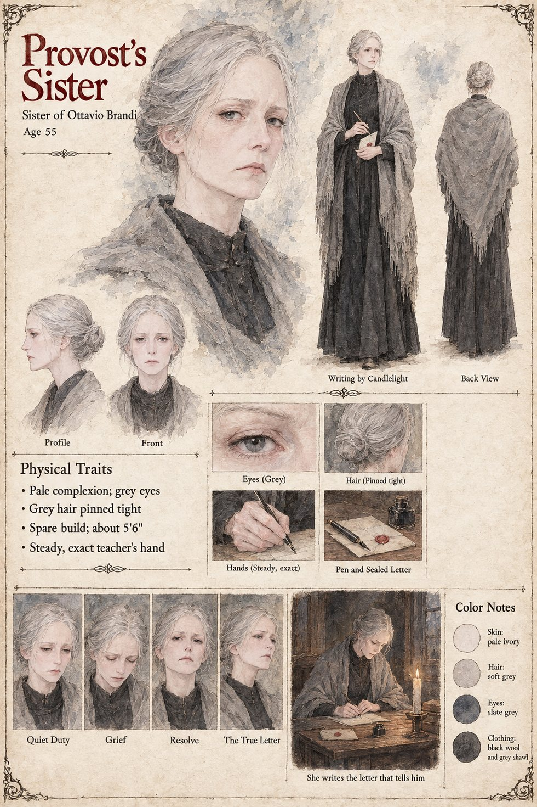

The Provost's Sister
Sister of Ottavio Brandi · the aunt who raised his daughter · unnamed · 55 years old by her sheet
She is the aunt into whose hand the Provost put his seven-year-old daughter in the cathedral at Montclar, and she is the one who taught the child to write. When the girl dies of a fever on the ninth of Garren, with a weekly letter lying unsealed in her desk, the aunt seals it and sends it, and then writes every letter that follows herself, in the round clear hand as nearly as an aunt who had taught it could make it and in the voice of a girl who was dead, so that her brother should not have to be told until the Order's business allowed him to come home. She thought it kind. She had meant, her letter says, to keep her silence until the spring.
It gives out on the twenty-second of Havren, the morning after his answer of the seventeenth arrives and asks, at the foot, whether the girl has her winter cloak. She writes the true letter in her own hand, so that he may know it from the first stroke, and says that she is very sorry. He reads the first line on the first of Iverin and carries the rest, unread, in the sleeve of his grey coat until it falls out on the twentieth; the manuscript does not record that she is told what it did to him, or whether she is ever answered. It never names her. The sheet's fifty-five years, spare five-foot-six, severe tired face, pale skin, grey hair pinned tight, grey eyes, black wool dress and grey shawl are its own, and so is the teacher's hand it draws, steady and exact, which is inferred from the manuscript's remark that she had taught the girl's.